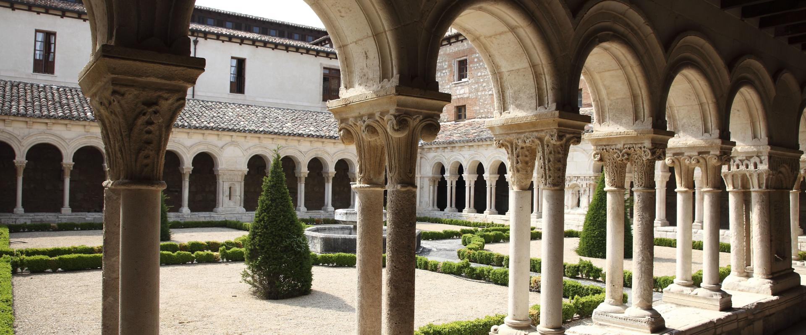

La Catedral Basílica Metropolitana de Santa María es un templo catedralicio de culto católico dedicado a la Virgen María, en la ciudad española de Burgos. Pertenece a la archidiócesis de Burgos
Su construcción comenzó en 1221, siguiendo patrones góticos franceses. Tuvo importantísimas modificaciones en los siglos xv y xvi: las agujas de la fachada principal, la capilla del Condestable y el cimborrio del crucero, elementos del gótico flamígero que dotan al templo de su perfil inconfundible. Las últimas obras de importancia (la sacristía o la capilla de santa Tecla) pertenecen ya al siglo xviii, siglo en el que también se modificaron las portadas góticas de la fachada principal. La construcción y remodelaciones posteriores se hicieron con piedra caliza extraída de las canteras de la cercana localidad de Hontoria de la Cantera.

ULTIMA PAGINA WEB LOCAL
a